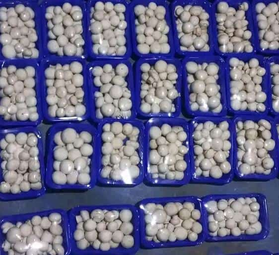
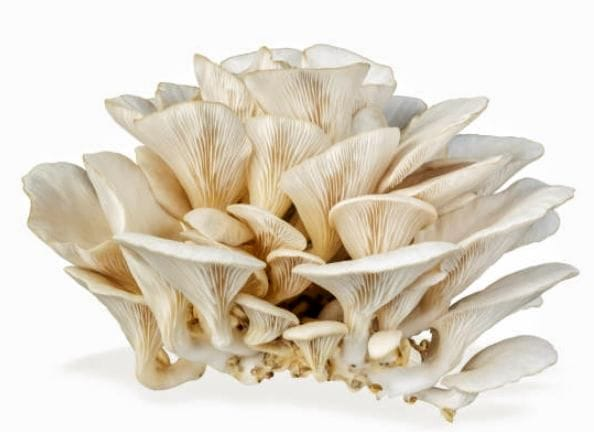

A mushroom is the fleshy,spore-bearing fruiting body of a fungus,typically produced above ground on soil or on its food source.
Mushrooms come in a variety of shapes, sizes,colors and textures.They are an important component of many ecosystems,
playing roles in decomposition and nutrient cycling.Additionally,many species of mushroomsare consumed by humans for food,
while others have medicinal properties or are used for recreational purposes.
MUSHROOM TYPES
There are thousands of different types of mushrooms,each with its own unique characteristics,flavors and uses.Here are some common types of mushrooms:
1. Button Mushroom (Agaricus bisporus):These are one of the most commonly consumed mushrooms worldwide.They have a mild flavor and a firm texture,making them versatile for cooking.
2. Shiitake Mushroom (Lentinula edodes):Originating from East Asia,shiitake mushrooms have a distinctive umami flavor and a meaty texture.They are often used in stir-fries,soups and other Asian dishes.
3. Portobello Mushroom (Agaricus bisporus):Portobello mushrooms are matured cremini mushrooms and are known for their large size,meaty texture and robust flavor.They are often grilled or roasted and used as a meat substitute in burgers and sandwiches.
4. Oyster Mushroom (Pleurotus ostreatus):These mushrooms have a delicate flavor and a velvety texture.They come in various colors,including white,gray and pink.Oyster mushrooms are versatile and can be used in a wide range of dishes.
5. Chanterelle Mushroom (Cantharellus cibarius):Chanterelles have a distinctive trumpet-like shape and a fruity,peppery flavor.They are highly prized in culinary circles and are often used in gourmet dishes.
6. Morel Mushroom (Morchella spp.):Morels are prized for their unique honeycomb-like appearance and earthy flavor.They are often foraged in the wild and used in upscale cuisine.
7. Enoki Mushroom (Flammulina velutipes):These mushrooms have long,slender stems and tiny caps.They have a mild flavor and crunchy texture and are commonly used in Asian cuisine,especially in soups and salads.
8. Porcini Mushroom (Boletus edulis):Also known as cepes,porcini mushrooms have a rich,nutty flavor and a meaty texture.They are often used in Italian cuisine,particularly in pasta dishes and risottos.
9. King Trumpet Mushroom (Pleurotus eryngii):These mushrooms have thick,meaty stems and small caps.They have a mild,slightly sweet flavor and a firm texture,making them suitable for grilling,roasting or sautéing.
10. Lion's Mane Mushroom (Hericium erinaceus):This mushroom has a distinctive appearance with cascading,white,"hairy"tendrils.It has a mild seafood-like flavor and a tender texture,often used as a meat substitute or in vegetarian dishes.
These are just a few examples of the vast diversity of mushrooms found in nature,each offering its own unique culinary and nutritional benefits.
We shall first learn of only two types Button Farming

Oyster Farming
